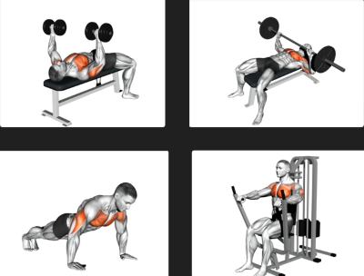
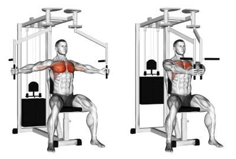
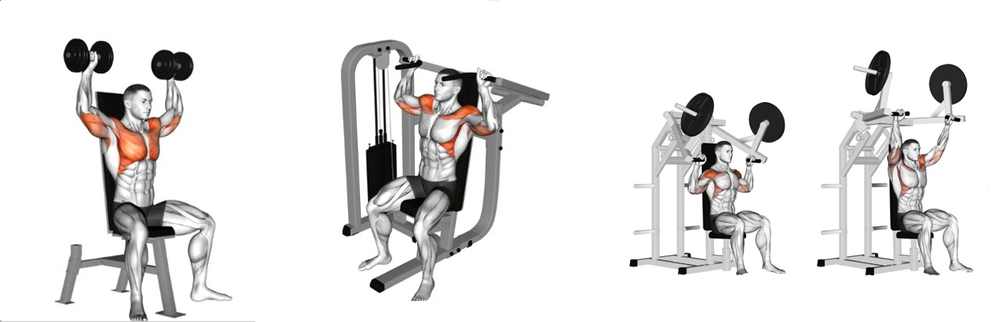

*الصدر وهو عضلة تتكون من اتجاهين للالياف العضلية بحيث يصبحا زاويتان:
الزاوية الأولي هي الصدر المتوسط التي تؤدي بتمارين مثل:

تمارين الbench bress بالدامبلز والبار
ونفس الزاوية ولكن بالماشين بالإضافة الي تمرين الضغط
الزاوية الثانية هي الصدر العلوي اللتي تؤدي بتمارين مثل:
تمرين البنش بريس بالماشين تمرين البنش بريس بالدامبلز
تمرين البنش بريس بالبار

الزاوية الثالثة والأخيرة هي الصدر الكامل:

*التراي وهي مجموعة عضلات تُنفذ وظائفها بهذة التمارين:

*الكتف ويقسم الي زاويتين:
الكتف الأمامي

الكتف الجانبي

تمارين السحب pull